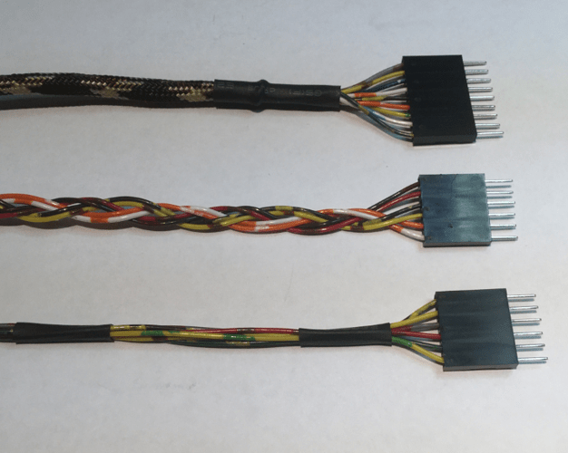
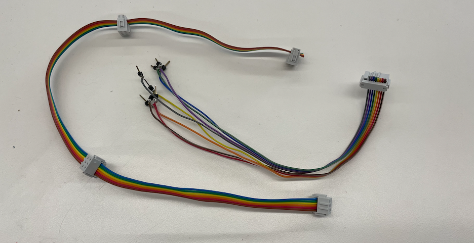
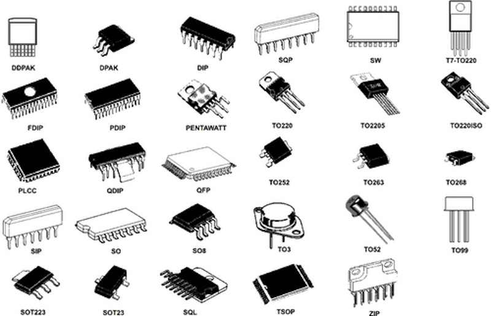
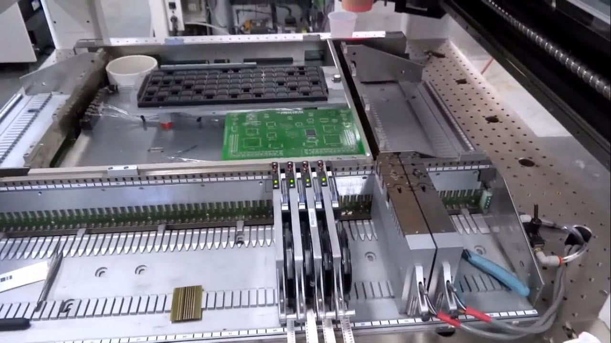

### Project Integration:
- Powering (wall plug, LiPo, USB battery)
- Wires (heat shrink, ribbon cables, screw terminals)
- Electronics: EDA, PCBs (1 or 2-sided, stacking headers)
- Mechanical (heat set inserts, captive nut)
- Enclosures
### Powering Projects
- Projects that need to be portable should use a battery, but otherwise projects should be powered by a wall adapter.
- LiPo batteries are popular, but require more [attention to safety](https://hobbyking.com/en_us/blog/lipo-battery-safety-101-a-guide). LiPo batteries come in cells (increments of 3.7 V). Typically, we'll support using single-cell LiPos for, e.g., wearable projects, but discourage multi-cell LiPos (which are commonly used for drones or RC cars, require specialized chargers, and are generally less safe).
- Coin cells
- AA or AAA battery packs
- USB battery packs
- Bench Power Supplies
- [Wind](https://mehmetguvenilir.github.io/PHYS_S-12/final.html), solar, other
### Wire Routing / Cable Management
- Screw terminals
- Terminal blocks
- Heat shrink, zip ties
- Wire sheathing <br> 
- Ribbon cables <br> 
### Enclosures / Housings
- 3D printing
- [Makercase](https://en.makercase.com/#/)
- <a href='../../lab/metal/sheet.html' target="_self">Sheet metal box (water jet, spot weld) </a>
- Injection molding
- Vacuum forming
#### Examples of Enclosures
- [Ana's Nacklace](https://akimber.github.io/PS70/finalproject.html)
- [Felly & Rebecca's Arigeta Machine](https://fellyliang.github.io/PS70/finalproject.html)
- [Chris' Smart Knife](https://tomkinsc.github.io/harvard-ps70/2020-05-14/)
- [Geoff's Tamagotchi](https://geometrikz.github.io/PS70/blog/final_project/)
### Electronics
#### Electronics Design
- Eagle (Fusion 360)
- KiCAD (open source)
- [SVG PCB](https://leomcelroy.com/svg-pcb/)
- [Easy EDA](https://easyeda.com/)
#### Electronics Fabrication
- Chip packages <br>

- SOIC (Small outline integrated circuit)
- "Through-hole" vs "surface-mount" components
Traces
- Board houses
- LSIC / [Easy EDA](https://easyeda.com/)
- [OSH Park](https://oshpark.com/); see [Chris' example](https://tomkinsc.github.io/harvard-ps70/2020-05-14/)
- [Digikey PCB](https://www.digikey.com/en/resources/design-tools/pcb-getting-started)
- Shenzhen
- Circuit board mill
- Vinyl cutter
- Printing (Voltera)
- Sewing
- Perf Boards / "Surf Boards"
- [ATTiny1614 breakout](https://www.tindie.com/products/drazzy/attiny16143224etc-breakout-board-bare-board/)
Assembly
- Pick-and-place machines <br>

- Solder mask, solder paste, silk screen, reflow oven
- Board fab/assembly houses
- [https://www.4pcb.com/Assembly-Services.html](https://www.4pcb.com/Assembly-Services.html)
Programming
- Bootloader
- In-system programmer
- Serial / FTDI
- UPDI (Unified Program and Debug Interface)